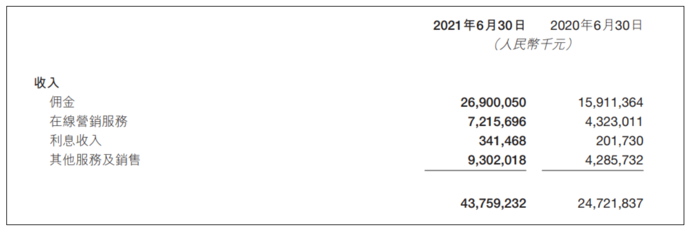
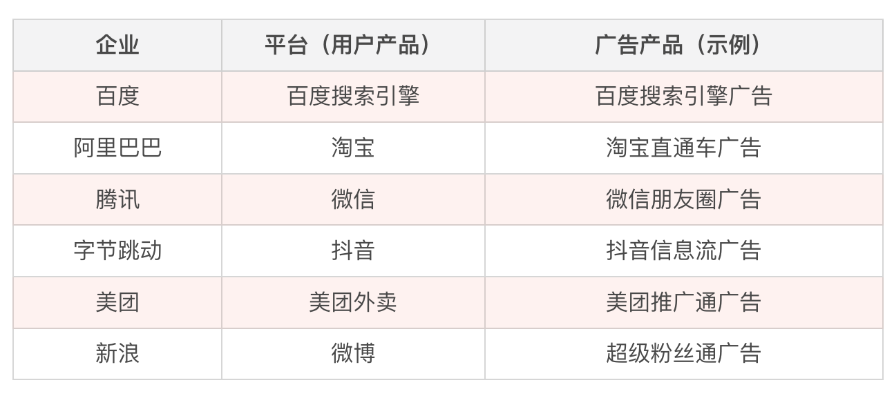
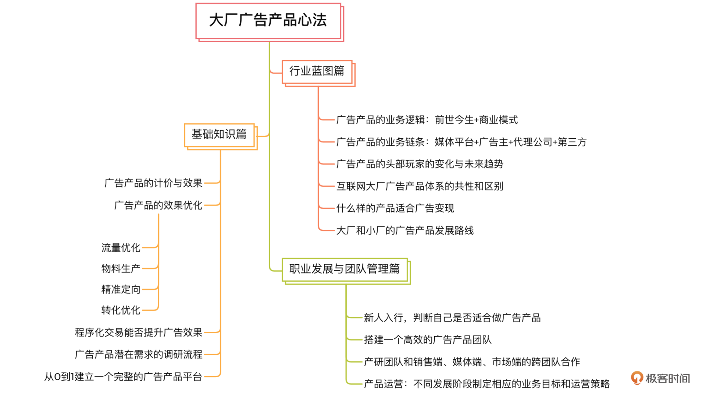

- 00 开篇词 作为一名互联网人，你为什么必须了解广告产品？.md.html
- 01 业务逻辑：广告产品的前世今生和商业模式是怎样的？.md.html
- 02 业务链条：广告主、媒体、第三方等分别如何看待广告产品？.md.html
- 03 头部玩家：从BAT到跳动的字节，广告产品有哪些变化与发展趋势？.md.html
- 04 产品体系：互联网大厂的广告产品存在哪些共性和区别？.md.html
- 05 变现模式：什么样的产品适合采用广告模式变现？.md.html
- 06 产品路线：大厂和小厂的广告产品发展路线有什么区别？.md.html
- 07 计价与效果（上）：如何制定合理的计价方式？.md.html
- 08 计价与效果（下）：如何制定合理的效果评估指标？.md.html
- 09 效果优化：如何一步步从提升曝光量深入到提升销量？.md.html
- 10 流量优化：如何兼顾广告收入和用户体验？.md.html
- 11 物料生产：如何满足广告主的创意需求？.md.html
- 12 精准定向：如何建立一个成熟的用户标签体系？.md.html
- 13 转化优化：互联网大厂如何利用算法优化广告效果？.md.html
- 14 程序化交易：程序化交易是否可以提升广告效果？.md.html
- 15 需求调研：广告产品潜在需求的调研流程是怎样的？.md.html
- 16 平台建设：如何从0到1建立一个完整的广告产品平台？.md.html
- 17 职业发展：新人入行，如何判断自己是否适合做广告产品？.md.html
- 18 团队建设：如何搭建一个高效的广告产品团队？.md.html
- 19 跨团队合作：产研团队和销售端、媒体端、市场端如何合作？.md.html
- 20 产品运营：不同发展阶段如何制定业务目标和运营策略？.md.html
- 21 广告产品彩蛋：课程答疑与推荐书目.md.html
- 结束语 你想要成为什么样的互联网广告产品人？.md.html
- 捐赠
00 开篇词 作为一名互联网人，你为什么必须了解广告产品？
你好，我是郭谊，一名资深广告产品人。
在深耕互联网广告行业的十年间，我曾先后担任过腾讯广告商业智能平台产品经理、百度展示广告高级产品经理、阿里巴巴品销广告业务负责人，有幸主导过腾讯早期的广告智能排期媒介工具上线、腾讯广告通系列产品的推广运营，参与过百度富媒体广告网络年流水从 0 到市场 Top 3 的全过程，以及阿里巴巴淘系流量与优酷土豆等大文娱系流量合并的关键工作。
能在互联网鼎盛发展的十余年里，见证广告产品从 PC 到移动、从半人工到系统化的变革，我非常幸运。同时，也从中寻出了一些规律和发展的机会。
从 2015 年起，我就开始接受来自各个互联网行业的商业咨询，其中不乏很多优秀的企业以及个人，但被问到最多的都是关于如何进行商业变现的问题。
所以我开始观察，在这个过程中，我见过很多企业手里握着大把的资源，却不知道如何利用，比如一些知名内容平台很晚才开始做广告变现，直接错过了流量商业化的第一次发展红利期；也见过不少聪明人抓住机遇，一跃成为行业新秀，比如我的一些老同事，果断放弃 BAT 战场，另辟蹊径跳槽到新晋流量平台，现在已经成为了独当一面的业务负责人甚至产品 VP。
可以说，在这个时代，系统了解广告产品的变现模式是十分必要的，同时也是快速提升个人竞争力的方式之一。而我们接下来要做的就是深入学习互联网广告及产品，并且高效利用这一模式进行变现。
那么，广告变现究竟是怎么一回事？
我用前几年增长迅速、异军突起的字节大军来给你讲一讲，它的一套赚钱模式到底是什么样的。
字节先是建立了一个非常强大的用户产品——抖音，通过各种渠道让抖音快速成长起来，收获了一大批初始用户。有了用户基础之后，字节开始打造它的广告产品，逐渐发展出了“开屏广告、信息流广告、DOU+ 广告”等丰富的广告类型，吸引了众多广告主，资金不断回流，将之前花在建立、推广和维护抖音这一用户产品上的钱，通过“转型”后的广告产品赚了回来。这就是一个非常成功且典型的案例。
其中，创造广告产品环节的目的就是为了让用户资源变成现金，很多企业都是通过这种模式做起来的，比如我工作过的百度有展示广告、腾讯有社交广告、阿里巴巴有品销广告等等。所以我说，广告才是互联网产品最常见的变现模式。
除此之外，企业还有一些其他的变现模式，比如说用户直接付费、佣金分成、金融运作、增值服务等等。很多企业哪怕刚开始选择的是其他变现模式，最终也还是免不了要增加广告产品进行变现。
就拿美团外卖来说吧，刚开始它主要的变现模式是佣金分成——即每个外卖订单完成后，商家会从订单收入中提取 8% 左右的金额，作为佣金给到美团外卖。显然这种模式非常适合美团，据美团最新财报显示，其超 6 成的收入来自佣金分成。
但即使是这样，在美团外卖产品发展成熟、流量壮大后，他们仍然推出了广告产品，并通过广告产品，给企业带来了同样可观的利润：以 2021 年 6 月美团公布的财报为例，其单季度广告收入超过了 70 亿，占总收入的 17 %，广告产品已然成为美团商业化中最不可或缺的组成部分之一。

可见，高流量的产品，若是不能像美国的奈飞（Netflix）那样完全靠大批量会员的订阅来直接收费，那就必然要尽早规划广告产品这一条商业化变现之路。国内最有影响力的一批互联网企业很早就意识到了这一点，几乎所有的头部企业都推出了符合平台自身特色的广告产品：

我知道，你的企业肯定也想过像 BAT 、字节等头部互联网公司一样，用广告产品来赚钱；我也遇到过不少从业者，希望能进入广告产品行业并站稳脚跟。但这确实不是一件容易的事，无论是企业还是个人，想进入这一行业，都必须拥有广告产品经理所必备的知识与技能、广阔的产品视野和敏锐的嗅觉。
可惜的是，这些体系化的基础知识与专业素质，并不常见。尽管当下相关著作确实有所增加，但相比学习与实战需求还是有很大的差距。我回想自己的大部分积累，其实也是在不断的实践、总结，以及和同行交流中产生的。
另外，广告产品本身的内容复杂性及多样性也对我们提出了更高的要求，我们不仅要了解广告产品涉及的各方、执行层面的各项指标，还需要涉猎更多的经典案例，从中取经。比如说，如果你要上架一个广告产品，就必须要知道：
- 接到产品商业化任务，是否应该采用广告变现，应该如何入手？
- 新开发的广告产品影响了用户体验，你要怎么处理？
- 广告产品的效果受到很多因素的影响，如何全面优化广告效果？
我们先来看第一个问题。虽然广告是一种最普遍的变现形式，但并非所有的平台都适合进行广告变现。你不仅需要拥有一定量级的流量与用户、建立一个可靠的团队，还要了解广告产品体系的发展规律，以及逐步建立起一个流量端与销售端双强的业务体系。
第二个问题，首先你要知道流量为王，但如果只注重收益而忽略用户体验无异于是杀鸡取卵。所以如果新开发的广告产品影响用户体验，那你可以从这两方面考虑问题：一是改变广告产品的呈现方式，尽量与平台相融合，做到不打扰或少打扰用户；二是调整广告出现的频率。
第三个问题，你要了解广告产品会受到哪些因素的影响，例如流量库存和广告占有率、广告创意的制作、用户标签体系和广告定向能力、算法优化与转化能力等等，然后从这些不同的方面，由浅入深、一步一步地优化广告产品的各项效果指标。
以上三个问题都是广告产品行业中最常见的问题，也是我们课程体系中的一个重要组成部分，当然还有更多，不妨看看详细的课程设计。
总的来说，我是把广告产品的基础知识、技术原理与我在大厂的成功经验做了一个结合，梳理出了 20 个最核心的问题，具体分成了三个模块。
- 行业蓝图篇
我们会站在整个行业的视角分析广告产品的业务逻辑以及各方的立场，然后分析互联网头部企业广告产品的发展与变化，从中窥探未来的发展趋势，分析互联网大厂产品的共性与区别，并根据四个互联网大厂的产品归纳出广告产品体系的典型分类方式。这一部分是我们课程的一个基础，能够帮助你理解后面的业务与产品实战的内容。
- 业务实战篇
在实战部分，我会为你梳理广告产品经理执行层面的各项工作，包括计价模式、交易模式、效果优化、需求调研等等。其中针对广告效果的四大影响因素：流量、物料、精准定位、转化，分别做了详细的阐述。最后，我会教你怎样从 0 到 1 建立一个完整的广告产品平台。
- 职业发展与团队建设篇
在这一部分，你能够了解到广告产品人需要具备哪些能力，你可以借此评估自己是否适合这个行业，帮助你做好职业发展规划。另外，如果你想在广告产品领域取得长足的发展，或者面临带领团队进行广告变现的任务，那这部分一定是学习重点。我会教你如何协调团队内部、团队之间的关系，帮助你搭建一个高效能的团队。

我想你在认真学习之后，沿着这条十年广告产品人的学习路径一路探寻下去，是可以搭建起自己的核心知识体系的，或者你还会发现那些互联网广告产品的“秘密”也是有章法可循的，那些变现的黄金法则也不过是冰山一角……
而如果我们把收获量化，可以一起定个目标：
- 在思想上，快速拥有一个广告产品人应有的视野和格局；
- 在行动上，快速胜任广告产品各方面的执行工作；
- 在职业道路上，快速成长为一名成熟的广告产品人。
最后，就让我们在实践中去达成它们吧，一起推开这扇奇妙世界的大门！
© 2019 - 2023 Liangliang Lee. Powered by gin and hexo-theme-book.